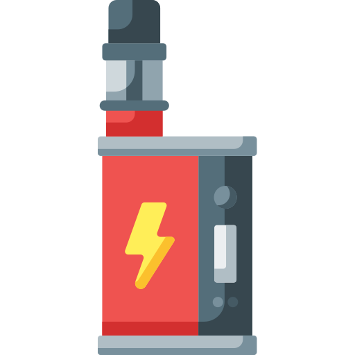

|
El cigarrillo electrónico o vapeador es un sistema electrónico inhalador diseñado en su origen para simular el consumo de tabaco sin quemarlo directamente, diferenciándose del cigarrillo tradicional. Estos dispositivos utilizan una batería para calentar y vaporizar una solución líquida que el usuario inhala en forma de aerosol. |
 |
Es un dispositivo que produce un aerosol que se aspira, simulando el acto de fumar. Está constituido por 3 elementos: una batería, un atomizador y un cartucho. El líquido de los cartuchos no contiene tabaco pero sí nicotina en dosis variables (hasta 54 mg/ml o más) y también muchas sustancias como propilenglicol, glicerina vegetal, saborizantes, aromatizantes y otros. Las diferencias en el voltaje de las baterías y los sistemas de circuitos para calentar la solución y transformarla en un aerosol pueden contribuir a la formación de sustancias tóxicas en las emisiones.
Los cigarrillos electrónicos NO son inofensivos. Emiten AEROSOL y NO vapor de agua. El aerosol contiene numerosas sustancias tóxicas y cancerígenas, además de nicotina lo que mantiene la adicción. Aún cuando el tanque está rotulado como libre de nicotina, puede contenerla. Los cigarrillos electrónicos no son seguros ni para fumadores ni para no fumadores. Los no fumadores que empiezan a usar cigarrillos electrónicos corren el riesgo de desarrollar adicción a la nicotina y empezar a fumar cigarrillos convencionales. No son seguros para jóvenes, adultos jóvenes, mujeres embarazadas o adultos que actualmente no usan productos de tabaco. Se desaconseja el uso de cigarrillo electrónico, tanto en espacios abiertos como cerrados, ya que la evidencia científica muestra que liberan sustancias tóxicas al medio ambiente y afectan a otras personas. Los cigarrillos electrónicos pueden dañar la salud de quienes lo usan